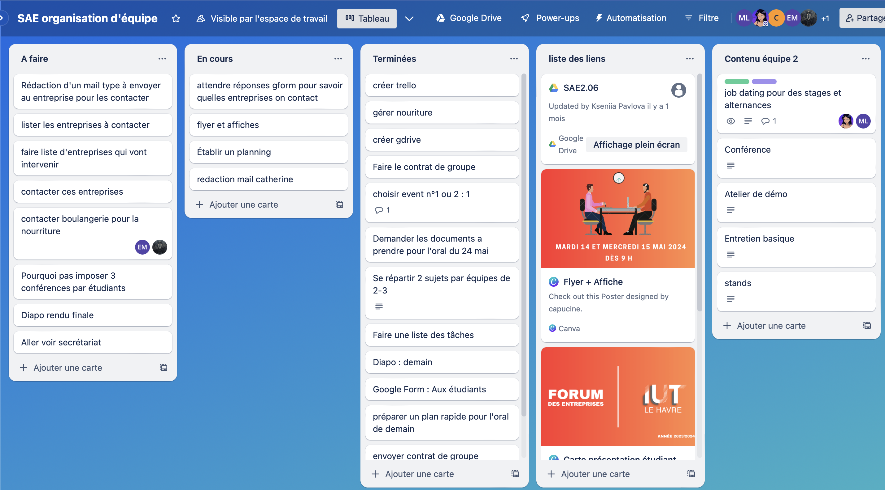
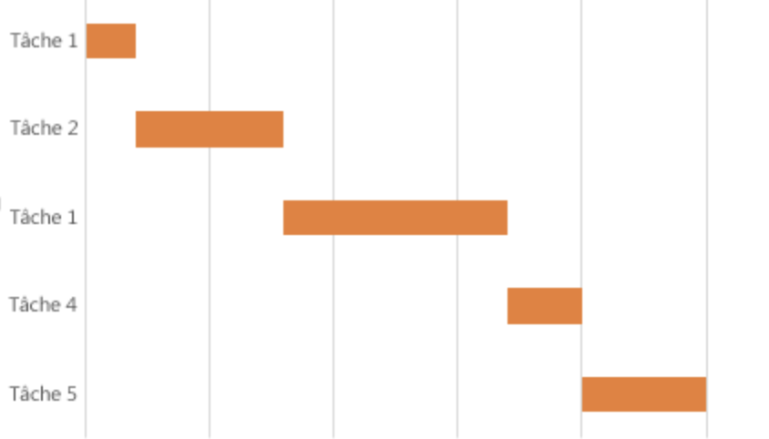
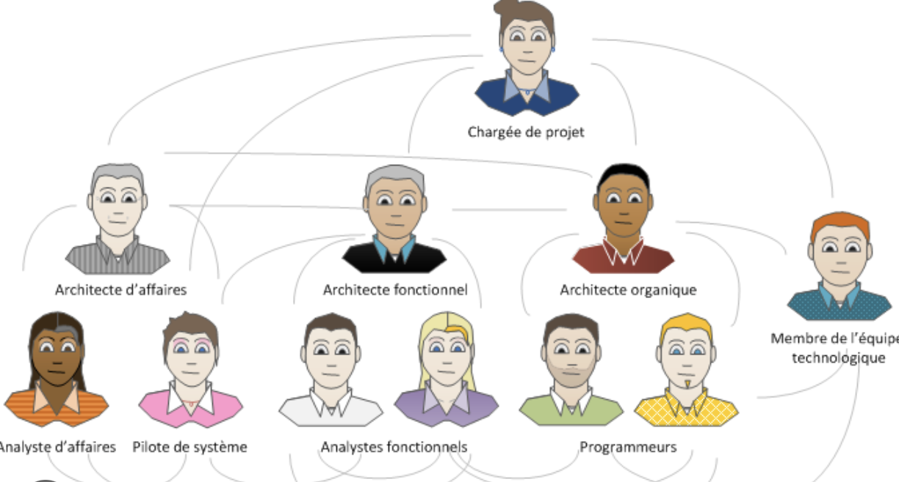

Compétences 5 : Conduire un projet
Les composantes ensentielles
- en identifiant les problématiques du client et les enjeux économiques de l’organisation
- en adoptant une démarche proactive, créative et critique
- en respectant les règles juridiques et les normes en vigueur
- en communiquant efficacement avec les différents acteurs d’un projet
- en sensibilisant à une gestion éthique, responsable, durable et interculturelle
Apprentissages critiques - Niveau 1
Appréhender les besoins du client et de l'utilisateur

Expression par le client et mise en place de solutions
Différentes méthodes
Mettre en place les outils de gestion de projet

Utilisation d'une liste de tâches collaborative (Trello)
Plannification des tâches
Identifier les acteurs et les différentes phases d’un cycle de développement

Les différents acteurs
- Phase de conception
- Phase de relecture
- Phase d'optimisation